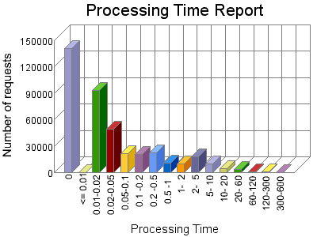

Analog 5.24
Analog 5.24 Report Magic for Analog 2.13
Report Magic for Analog 2.13The Processing Time report shows the time it took for your server (or your host's server) to process each request. The processing time is listed in seconds with a theoretical accuracy of milliseconds. Note if your processing time appears to be about 100-times too long, then you are probably hosted on an IIS system that reports in 100th second intervals rather than second intervals.

| Processing Time | Number of requests | |
|---|---|---|
| 1. | 0 | 140,966 |
| 2. | <= 0.01 | 0 |
| 3. | 0.01-0.02 | 93,699 |
| 4. | 0.02-0.05 | 49,570 |
| 5. | 0.05-0.1 | 21,538 |
| 6. | 0.1 -0.2 | 20,529 |
| 7. | 0.2 -0.5 | 22,853 |
| 8. | 0.5 -1 | 10,731 |
| 9. | 1- 2 | 9,933 |
| 10. | 2- 5 | 17,814 |
| 11. | 5- 10 | 9,934 |
| 12. | 10- 20 | 4,415 |
| 13. | 20- 60 | 3,908 |
| 14. | 60-120 | 874 |
| 15. | 120-300 | 627 |
| 16. | 300-600 | 1 |
Report time frame September 2, 2007 00:24 to September 16, 2007 07:05.
This report was generated on September 16, 2007 03:37.
Report time frame September 2, 2007 00:24 to September 16, 2007 07:05.
| Web statistics report produced by: | |
| Analog 5.24 | Report Magic for Analog 2.13 |